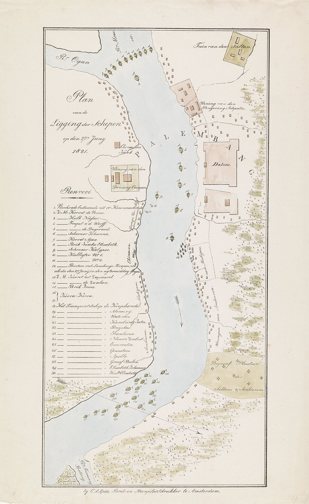
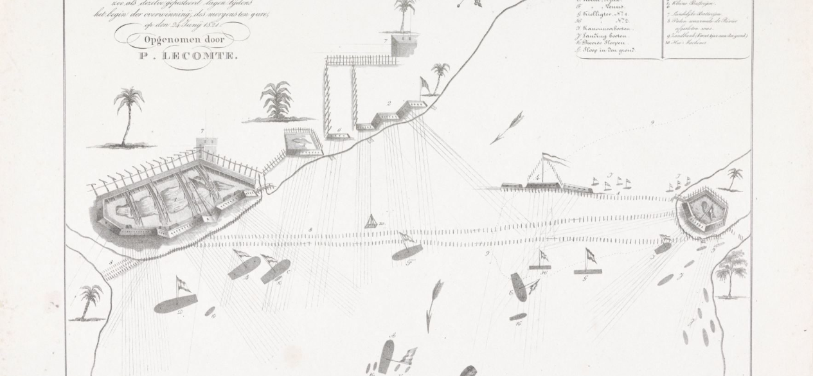
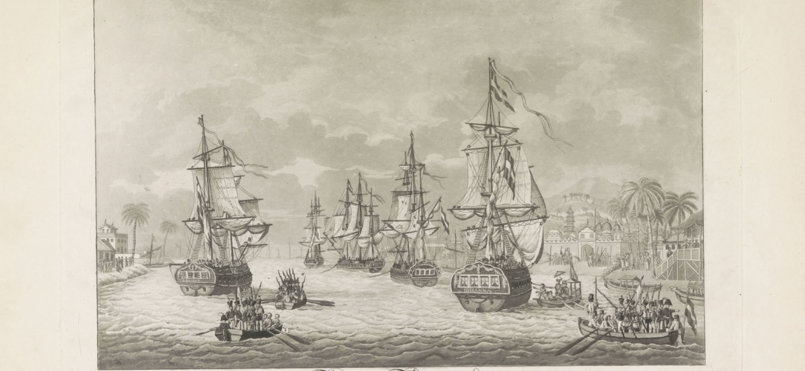

01 — LATAR BELAKANG
Kesultanan Palembang di Tengah Persaingan Kolonial
Pada awal abad ke-19, Kesultanan Palembang Darussalam merupakan salah satu kekuatan politik penting di wilayah Sumatra bagian selatan. Letaknya yang strategis di sekitar Sungai Musi membuat Palembang mempunyai hubungan yang erat dengan jalur perdagangan dan wilayah penghasil komoditas, termasuk Bangka dan Belitung.
Keadaan politik di kawasan tersebut berubah ketika persaingan antara Inggris dan Belanda semakin kuat. Pendudukan Inggris atas Batavia pada 1811 membuka peluang bagi Sultan Mahmud Badaruddin II untuk mengusir kekuatan Belanda dari Palembang. Pada September 1811, loji Belanda di Sungai Aur diserang dan dihancurkan. Peristiwa tersebut kemudian menjadi salah satu titik penting dalam rangkaian konflik Palembang pada periode 1811–1821.
Sumber: Koleksi sejarah.
Konflik tersebut tidak hanya merupakan persoalan militer. Pergantian kekuasaan antara Inggris dan Belanda turut memengaruhi kedudukan para sultan Palembang. Karena itu, sejarah Palembang pada masa ini merupakan perpaduan antara peperangan, diplomasi, perebutan pengaruh, dan persoalan pergantian kekuasaan di lingkungan kesultanan.
02 — 1811
Awal Perlawanan dan Runtuhnya Loji Belanda
Tahun 1811 menjadi salah satu titik awal penting dalam rangkaian perlawanan Palembang. Ketika kekuatan Inggris menyerang dan menguasai Batavia, posisi Belanda di berbagai wilayah Nusantara menjadi semakin lemah. Kondisi tersebut dimanfaatkan oleh Sultan Mahmud Badaruddin II untuk mengurangi pengaruh Belanda di wilayah Kesultanan Palembang.
Pada 14 September 1811, terjadi serangan terhadap loji Belanda di Sungai Aur. Kekuatan Palembang berhasil menghancurkan kedudukan Belanda tersebut. Peristiwa ini memperlihatkan bahwa Kesultanan Palembang memiliki kemampuan militer dan politik untuk mengambil tindakan terhadap kekuatan kolonial yang berada di wilayahnya.
Sumber: Koleksi sejarah.
Namun, situasi tersebut kemudian membawa Palembang ke dalam konflik yang lebih luas dengan Inggris. Inggris mempunyai kepentingan sendiri di kawasan tersebut, terutama berkaitan dengan perdagangan dan pengaruh politik. Hubungan yang pada awalnya dapat menjadi keuntungan bagi Palembang kemudian berubah menjadi konflik ketika kepentingan Inggris semakin besar.
03 — 1812
Ekspedisi Inggris dan Perubahan Kekuasaan
Pada tahun 1812, hubungan antara Sultan Mahmud Badaruddin II dan Inggris memburuk. Inggris menghendaki keuntungan politik dan ekonomi yang lebih besar dari Palembang, termasuk pengaruh terhadap wilayah Bangka dan Belitung. Sultan Mahmud Badaruddin II tidak menerima seluruh tuntutan tersebut.
Inggris kemudian melancarkan ekspedisi militer ke Palembang. Dalam keadaan terdesak, Sultan Mahmud Badaruddin II meninggalkan pusat pemerintahan dan melanjutkan perlawanan dari wilayah yang lebih aman. Sementara itu, Inggris mengangkat Pangeran Adipati, yang kemudian dikenal sebagai Sultan Ahmad Najamuddin II, sebagai penguasa di Palembang.
Perubahan tersebut menunjukkan bahwa persaingan kolonial tidak hanya dilakukan melalui peperangan. Pengangkatan seorang sultan yang mendukung kepentingan Inggris juga menjadi bagian dari strategi politik untuk memperoleh pengaruh di Kesultanan Palembang.
Sumber: Koleksi sejarah.
04 — 1814–1818
Kembalinya Belanda dan Meningkatnya Ketegangan
Persaingan Inggris dan Belanda kemudian mengalami perubahan setelah berakhirnya perang di Eropa. Melalui Konvensi London 1814, Inggris harus mengembalikan berbagai wilayah yang sebelumnya berada di bawah kekuasaan Belanda. Pengembalian kekuasaan tersebut turut memengaruhi keadaan politik di Palembang.
Setelah Belanda kembali memperoleh kekuasaan, masalah pergantian sultan dan hubungan antara Sultan Mahmud Badaruddin II dengan Sultan Ahmad Najamuddin II semakin rumit. Pemerintah kolonial berusaha menggunakan kondisi politik internal Kesultanan Palembang untuk memperkuat kedudukannya.
Ketegangan akhirnya semakin meningkat. Belanda menuntut berbagai konsesi dan berusaha memperluas kendalinya atas wilayah Palembang. Sultan Mahmud Badaruddin II menolak sebagian tuntutan tersebut. Keadaan inilah yang kemudian mengarah pada pecahnya perang besar antara Palembang dan Belanda pada tahun 1819.
05 — 1819
Perang Palembang dan Kekalahan Belanda
Pada tahun 1819, Belanda mengirim ekspedisi militer ke Palembang. Pasukan Belanda dipimpin oleh Herman Warner Muntinghe dan kemudian berhadapan dengan pertahanan yang telah dipersiapkan oleh Sultan Mahmud Badaruddin II.
Pertahanan Palembang memanfaatkan kondisi geografis wilayah sungai. Sungai Musi dan jaringan sungai di sekitarnya membuat pergerakan kapal dan pasukan Belanda menjadi sulit. Pertahanan berupa benteng, meriam, penghalang di sungai, serta pertahanan di wilayah pedalaman digunakan untuk menghambat gerakan pasukan lawan.
Kekuatan Palembang berhasil memukul mundur ekspedisi Belanda. Kekalahan tersebut menjadi bukti bahwa Kesultanan Palembang tidak mudah ditaklukkan hanya dengan serangan langsung. Belanda kemudian kembali ke Batavia dan mempersiapkan ekspedisi yang lebih besar.
“Kekuatan pertahanan Palembang tidak hanya berada pada pasukannya, tetapi juga pada sungai, benteng dan kondisi geografis yang mendukung strategi pertahanan.”
Keberhasilan tahun 1819 memberikan waktu bagi Palembang untuk mempertahankan kedaulatannya. Namun, kemenangan tersebut juga membuat Belanda semakin serius untuk menguasai Palembang secara penuh.
06 — 1821
Ekspedisi Kedua Belanda
Setelah kegagalan ekspedisi sebelumnya, Belanda mempersiapkan ekspedisi kedua dengan kekuatan yang lebih besar. Ekspedisi tersebut dipimpin oleh Jenderal Hendrik Merkus de Kock. Kali ini Belanda berusaha menggabungkan kekuatan angkatan laut dengan serangan darat untuk menembus sistem pertahanan Palembang.
Pertempuran berlangsung di sekitar jalur sungai dan pertahanan Palembang. Kapal-kapal Belanda bergerak menuju wilayah pertahanan kesultanan, sementara pasukan Palembang berusaha mempertahankan jalur masuk menuju pusat kekuasaan.

Sumber: Rijksmuseum, koleksi RP-P-OB-87.399, tahun 1821.
Lihat sumber asli Rijksmuseum
Citra tersedia sebagai Public Domain / CC0.
Peta tersebut memberikan gambaran penting mengenai bagaimana operasi militer Belanda berlangsung di lingkungan sungai Palembang. Posisi kapal menjadi bagian penting dari strategi Belanda karena akses menuju pusat Kesultanan Palembang sangat dipengaruhi oleh jaringan sungai.
Rijksmuseum juga menyimpan peta lain dari 24 Juni 1821 yang menunjukkan posisi baterai pertahanan Palembang dan kapal-kapal perang Belanda. Peta tersebut memperlihatkan bahwa pertempuran bukan sekadar pertemuan dua pasukan di daratan, tetapi juga pertempuran yang sangat bergantung pada posisi pertahanan di sepanjang sungai.

Sumber: Rijksmuseum, koleksi RP-P-OB-87.400, 1821.
Lihat sumber asli Rijksmuseum
Citra tersedia sebagai Public Domain / CC0.
Pada akhirnya, pertahanan Palembang tidak mampu mempertahankan pusat kesultanan dari ekspedisi Belanda yang lebih besar. Palembang berhasil dikuasai pada Juni 1821. Sultan Mahmud Badaruddin II kemudian menjadi tawanan Belanda dan dibawa keluar dari Palembang.
07 — TOKOH UTAMA
Tokoh dalam Perlawanan
Sultan Mahmud Badaruddin II
Sultan Mahmud Badaruddin II merupakan tokoh utama dalam perjuangan Kesultanan Palembang pada periode ini. Ia memimpin perlawanan terhadap kekuatan kolonial dan memanfaatkan kondisi geografis Palembang sebagai bagian dari strategi pertahanan.
Dalam Perang Palembang 1819, pasukan yang dipimpinnya berhasil menggagalkan ekspedisi Belanda. Namun pada ekspedisi kedua tahun 1821, Belanda berhasil merebut Palembang dan membawa Sultan Mahmud Badaruddin II sebagai tawanan.
Sultan Ahmad Najamuddin II
Sultan Ahmad Najamuddin II merupakan salah satu tokoh penting dalam konflik politik internal Kesultanan Palembang. Ia diangkat oleh Inggris setelah ekspedisi Inggris ke Palembang pada 1812.
Kedudukannya kemudian menjadi bagian dari persaingan politik antara Inggris, Belanda, dan keluarga Kesultanan Palembang.
Pemerintah Kolonial Belanda
Pemerintah kolonial Belanda berusaha mengembalikan pengaruhnya di Palembang setelah masa kekuasaan Inggris. Setelah mengalami kekalahan pada 1819, Belanda mengirim ekspedisi kedua pada 1821 dengan kekuatan yang lebih besar.
Ekspedisi kedua tersebut dipimpin oleh Jenderal Hendrik Merkus de Kock dan berhasil menguasai Palembang. Setelah kemenangan tersebut, Sultan Mahmud Badaruddin II menjadi tawanan Belanda.
08 — AKHIR PERLAWANAN
Berakhirnya Perlawanan Sultan Mahmud Badaruddin II
Kekalahan Palembang pada tahun 1821 menjadi titik akhir penting dalam perjuangan Sultan Mahmud Badaruddin II. Setelah Palembang dikuasai, Sultan dibawa oleh Belanda dan kemudian diasingkan jauh dari Palembang.

Sumber: Rijksmuseum, RP-P-OB-87.396.
Lihat sumber asli Rijksmuseum
Meskipun kekuasaan politik Kesultanan Palembang akhirnya berada di bawah kendali kolonial, perlawanan selama satu dekade tersebut menunjukkan kuatnya usaha masyarakat dan pemimpin Palembang dalam mempertahankan kedaulatan wilayahnya.
Perlawanan Palembang juga memperlihatkan bahwa sungai, benteng, dan kondisi geografis dapat menjadi faktor penting dalam menghadapi kekuatan militer yang memiliki persenjataan dan armada yang lebih besar.
KESIMPULAN
Warisan Perlawanan Palembang
Periode 1811–1821 merupakan salah satu bagian penting dalam sejarah Kesultanan Palembang Darussalam. Dalam kurun waktu tersebut, Palembang menghadapi perubahan kekuasaan dari Belanda ke Inggris dan kembali kepada Belanda, disertai konflik internal mengenai kedudukan para sultan.
Sultan Mahmud Badaruddin II menjadi tokoh sentral dalam perjuangan mempertahankan kedaulatan Palembang. Kemenangan pada 1819 menunjukkan keberhasilan strategi pertahanan Palembang, sedangkan kekalahan pada 1821 menandai keberhasilan ekspedisi kedua Belanda.
Sejarah tersebut tetap menjadi bagian penting dari ingatan sejarah Sumatra Selatan dan perjuangan bangsa Indonesia dalam menghadapi kekuasaan kolonial.